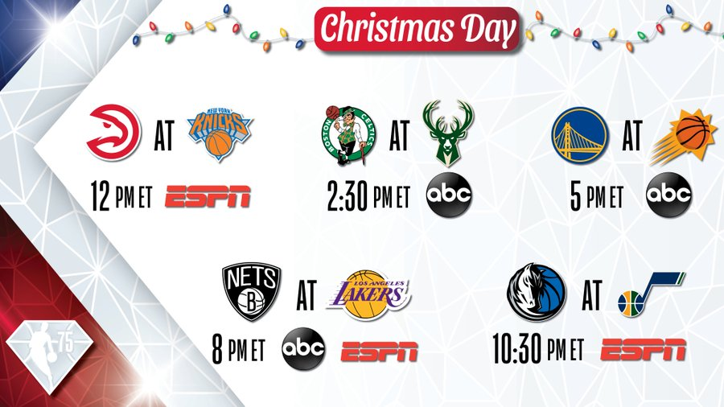

# install.packages("devtools")
devtools::install_github("rbolt13/NBAcharts")
# load packages
library(rvest)
library(tidyverse)
library(NBAcharts)This post is an updated version of NBA circular bar charts, which are used to compare teams competing on Christmas Day.

0.0 Introduction
This post is an updated version of older post I have on my previous blog called, NBA Play in Games - Circular Barplots of Simple Stats. When re-reading this post I realized the code was repetitive, and not very efficient. So instead of moving the code over
Most of my past posts from that blog have been updated slightly and put on my current blog.
However my older post was repetitive, and not very efficient. I’ve instead rewritten the code for that post to use more lists, and for loops.
seemed tedious the way I originally wrote it. So here I am 6+ months later re-writing what I have previously done to compare teams competing on Christmas Day:
Boston Celtics Vs. Milwaukee Bucks
Golden State Warriors Vs. Phoenix Suns
Brooklyn Nets Vs. Los Angeles Lakers
Dallas Mavericks Vs. and Utah Jazz.
1.0 Set Up
To make these plots I will use three packages, one of which I created. To install my package make sure you have the devtools package installed so that you can use the install_github() function to use my package.
rvest : to gather the data from Basketball Reference
tidyverse : to clean the data
NBAcharts : to create the circular bar charts.
1.1 Initialize Team Variables
To start I am going to initialize all team variables, and then put all those into a list. This will make it easier to extract, more efficient to update, and potentially use again in the future for different teams.
Note: For each teams HTML I used Team Color Codes. I did not use black or white because white blends into the background of the graphs, and black would hide the labels. For the Brooklyn Nets I did not use their actual black and white team colors, but instead used different shades of grey.
# team variables: name, slug, and colors
cels <- list(team_name = "Boston Celtics",
slug = "BOS",
colors = c("#007A33",
"#BA9653",
"#963821"))
bucks <- list(team_name = "Milwaukee Bucks",
slug = "MIL",
colors = c("#00471B",
"#EEE1C6",
"#0077C0"))
gsw <- list(team_name = "Golden State Warriors",
slug = "GSW",
colors = c("#1D428A",
"#FFC72C"))
suns <- list(team_name = "Phoenix Suns",
slug = "PHO",
colors = c("#1D1160",
"#E56020",
"#63727A",
"#F9AD1B",
"#B95915",
"#BEC0C2"))
nets <- list(team_name = "Brooklyn Nets",
slug = "BRK",
colors = c("#272727",
"#F9F9F9"))
lakers <- list(team_name = "Los Angeles Lakers",
slug = "LAL",
colors = c("#552583",
"#FDB927"))
mavs <- list(team_name = "Dallas Mavericks",
slug = "DAL",
colors = c("#00538C",
"#002B5E",
"#B8C4CA"))
jazz <- list(team_name = "Utah Jazz",
slug = "UTA",
colors = c("#002B5C",
"#00471B",
"#F9A01B"))
# list of teams
team_list <- list(cels,
bucks,
gsw,
suns,
nets,
lakers,
mavs,
jazz)1.2 Initialize Graph Variables
All graphs will have the same caption information about who created the graph, sources, and date.
Each
all_cap <- c("\n\n Data Visualisation by Randi Bolt\n https://www.rbolt.me/\nSource: Basketball Reference \nLink: https://www.basketball-reference.com/\nDate: December 23rd, 2022")
nba_stats <- list(c("Steals",
"Blocks",
"Defensive Rebounds",
"Points Per Game",
"Assists",
"Turn Overs"))
nba_doers <- list(c("stealers",
"blockers",
"defensive rebounders",
"points per game scorers",
"assitsters",
"turn overers"))1.3 Graph Title For Loop
Doesn’t work :(, might need to check other outputs with similar form.
nba_t <- list()
nba_title <- list()
for(i in 1:length(team_list)){
op <- team_list[[c(i,1)]]
for(j in 1:length(nba_stats)){
output <- paste0(op,
" ",
nba_stats[[c(1,j)]])
nba_t[[i]] <- output
}
nba_title[[i]] <- nba_t
}
# nba_titlenba_title <- list()
for(i in 1:length(team_list)){
for(j in 1:length(nba_stats))
output <- paste0(team_list[[c(i,1)]],
" ",
nba_stats[[c(1,i)]])
nba_title[[i]] <- output
}
# nba_title
# nba_stats[[c(1,2)]]1.4 Graph Caption Subtitle For Loop
nba_sub_cap <- list()
for(i in length(nba_doers))
{
output <- paste0("This visualization shows the top 25% of ", nba_doers[[i]], ".")
nba_sub_cap[[i]] <- output
}2.0 Functions
This post will use a handful of functions to accomplish the end goal of creating multiple circular bar plots. These functions include:
scrape_bbR(): This function scrapes data tables off basketball reference.s_tb(): This is a nested function that scrapes a defined table off basketball reference. Within thescrape_bbR()this nested function is scraping the totals and per-game tables. This can be updated on line 132, within the stat_tb list.
sub_nba(): This function subsets a larger data frame of team data into two column data sets with a players name, and a specific statistic. The subset data is then subset again to the top 25% of players with that stat.data_list(): This function uses to create a list of stat tables for each team. The stat tables being subset for each team are: steals, blocks, defensive rebounds, assists, turnovers, and points per game.color_ramp(): This function uses a teams colors and subset data to create color pallets.``
nba_graphs()
2.1 Scraping Function
scrape_bbR <- function(slug){
"
A function that scrapes and merges statistics tables from Basektball Reference.
@param slug is a 3 letter character string that represents the teams url address.
@return merged_tb which is a df of NBA team statistics.
"
# URL
url <- base::paste0("https://www.basketball-reference.com/teams/",
slug,"/2023.html")
# Nested Table Scraping Function
s_tb <- function(stat_tb, url){
"
A function that scrapes a defined table off a specific Basketball reference URL.
@param url is a character string that represents a web address where the table is located.
@param stat_tb is a character string that represents the stats table to scrape.
@return s_tb is a df of a NBA teams specific statistics table.
"
s_tb <- url %>%
read_html %>%
html_node(stat_tb) %>%
html_table()
# Assign Column 2 = "player"
base::names(s_tb)[2] <- "player"
# Replace NA values with 0 (for quantile function)
s_tb[base::is.na(s_tb)] <- 0
return(s_tb)
}
# Saved as a list to make it easy to modify
stat_tb <- list(ttl_stat <- s_tb("#totals", url),
per_game_stat <- s_tb("#per_game", url))
# Merge Stats tables
merged_tb <- merge(stat_tb[[1]],
stat_tb[[2]],
by = c("Age", "player", "G", "GS"))
base::return(merged_tb)
}The following for loop will cycle through team_list slugs, and scrape team data for each team in the list.
nba_data <- list()
for (i in 1:length(team_list))
{
output <- scrape_bbR(team_list[[c(i,2)]])
nba_data[[i]] <- output
}
head(nba_data, 2)# save data
# base::saveRDS(nba_data, "../../00_data/nba_raw_data_12_24_22.rds")2.2 Subset Function
sub_nba <- function(team_data, team_stat){
"
A function that ..
@param team_data is a dataframe of NBA stats.
@param team_stat is
@return sub_nba_data is a dataframe of subset NBA stats.
"
# subset data
sub_data <- data.frame("player" = team_data["player"],
team_stat = team_data[team_stat])
# filter by Q4
q_data <- sub_data %>%
filter(sub_data[[2]] >= quantile(sub_data[[2]])[[4]])
# arrange ascending
sub_nba_data <- mutate(q_data %>%
arrange(-q_data[[2]]))
return(sub_nba_data)
} 2.3 Data List Function
There is a lot of simple stats to look at, so this
but to narrow it down lets look at some big ones: steals, blocks, defensive rebounds, assists, turnovers, and points per game.
data_list <- function(val){
"
A function that takes in a value
"
data <- list(steals = sub_nba(nba_data[[val]],
"STL.x"),
blocks = sub_nba(nba_data[[val]],
"BLK.x"),
def_reb = sub_nba(nba_data[[val]],
"DRB.x"),
assists = sub_nba(nba_data[[val]],
"AST.x"),
turnovers = sub_nba(nba_data[[val]],
"TOV.x"),
points_per_game = sub_nba(nba_data[[val]],
"PTS/G")
)
return(data)
}2.4 Color Pallets
color_ramp <- function(colors,data){
"
"
grDevices::colorRampPalette(colors)(base::length(data[[c(1,1)]]))
}2.5 Graph Captions
nba_sub_cap <- list()
for(i in length(nba_doers))
{
output <- paste0("This visualization shows the top 25% of ", nba_doers[[i]], ".")
nba_sub_cap[[i]] <- output
}2.6 Graph Ring Scale
For each graph there will be three rings that would be equivalent to defining a y-axis. To acquire these value for each graph I initially find the max value for each nba table, divide that value by three, and round it to the nearest whole number.
rs <- list()
ring_scale <- list()
for (i in 1:length(nba_subset_data)) {
for (j in 1:length(nba_subset_data[[i]])) {
output <- round(max(nba_subset_data[[c(i,j,2)]]/3))
rs[[j]] <- output
}
ring_scale[[i]] <- rs
}
ring_scale2.7 Graphs
nba_graphs <-function(data, r_scale, cp, ct, cs, cc){
"
This function ...
"
circ_col_chart(player_data = data,
ring_scale = r_scale,
ring_inner = r_scale+2,
ring_middle = r_scale*2+2,
ring_outer = r_scale*3+2,
ringlab_inner = r_scale,
ringlab_middle = r_scale*2,
ringlab_outer = r_scale*3,
col_pal = cp,
chart_title = ct,
chart_subtitle = cs,
chart_source = cc,
cc_chart_filename = paste0("../../00_figs/", ct, Sys.Date(), ".png")
)
}nba_graphs(nba_subset_data[[c(1,1)]],
ring_scale[[c(1,1)]],
nba_color_pallets[[c(1,1)]],
"title",
"subtitle",
"source")3.0 Collecting Data
nba_data <- list()
for (i in 1:length(team_list))
{
output <- scrape_bbR(team_list[[c(i,2)]])
nba_data[[i]] <- output
}
head(nba_data, 2)# 2.2 and 2.3
nba_subset_data <- list()
for (i in 1:length(nba_data))
{
output <- data_list(i)
nba_subset_data[[i]] <- output
}# 2.4
nba_color_pallets <- list()
for(i in 1:length(nba_subset_data))
{
output <- color_ramp(team_list[[c(i,3)]], nba_subset_data[[i]])
nba_color_pallets[[i]] <- output
}